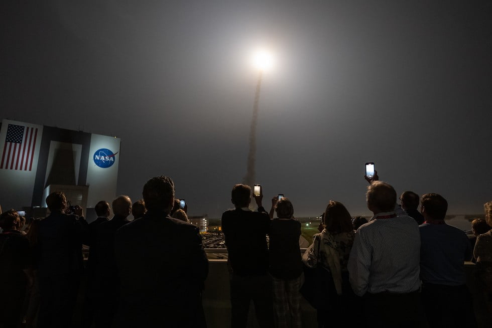

နာဆာက အခု လွှတ်တင်တဲ့ Space Launch System ဟာ လူလိုက်ပါခြင်း မရှိတဲ့ အိုရိုင်ယွန် အာကာသယာဉ် (Orion Spacecraft) ကို သယ်ဆောင်ပြီး အမေရိကန် ပြည်ထောင်စု၊ ဖလော်ရီဒါ ပြည်နယ်မှာ ရှိတဲ့ ကိပ် ကာနေဗရယ်လ် (Cape Canaveral) စခန်းကနေ လွှတ်တင် ခဲ့တာ ဖြစ်ပါတယ်။
နာဆာရဲ့ သတင်း ထုတ်ပြန် ချက်တွေ အရတော့ အခု လွှတ်တင်မှုဟာ အောင်မြင်ပြီး လက်ရှိမှာ အိုရိုင်ယွန် အာကာသယာဉ်ဟာ လ ဆီကို ဦးတည် ပျံသန်းလျှက် ရှိတယ်လို့ သိရပါတယ်။

အာတီးမီးစ် – ၁ စီမံကိန်း ဆိုတာဘာလဲ
အခု အာတီးမီးစ် – ၁ စီမံကိန်းဟာ လပေါ် လူလွှတ်တင်မယ့် စီမံကိန်းရဲ့ ပထမ အဆင့် ဖြစ်ပါတယ်။ ဒီ အဆင့် – ၁ မှာတော့ လူလိုက်ပါခြင်း မရှိတဲ့ အာကာသ ယာဉ်တွေကို အသုံးပြုပြီး လဆီ ချဉ်းကပ်ခြင်းနဲ့ လပတ်လမ်းမှာ သီတင်းပတ် အတော်ကြာ စမ်းသပ် ပျံသန်းခြင်း တွေကို ပြုလုပ်မှာ ဖြစ်ပါတယ်။အခုလို လကို လှည့်ပတ် ပျံသန်းမှု ပြုလုပ်ပြီးတဲ့နောက် ဒီ အိုရိုင်ယွန် အာကာသ ယာဉ်ဟာ ကမ္ဘာကို ပြန်လာပြီး ပစိဖိတ် သမုဒ္ဒရာ အတွင်းမှာ ပြန်လည် ဆင်းသက် တာကိုလဲစမ်းသပ်မှာ ဖြစ်ပါတယ်။
အခုလို စမ်းသပ် ပျံသန်းစဉ် အတွင်း ယာဉ်ရဲ့ စနစ်အားလုံး ပုံမှန် အလုပ် လုပ်မလုပ်ကို စမ်းသပ်ကြမှာ ဖြစ်ပါတယ်။
အာတီးမီးစ် – ၁ ပေါ်မှာ ဘာတွေ သယ်ဆောင်သွားသလဲ
အခု အာတီးမီးစ် – ၁ ပေါ်မှာ ယခင် လပေါ် ပျံသန်းခဲ့တဲ့ ပျံသန်းမှု တွေက အမှတ်တရ ပစ္စည်းတွေ သယ်ဆောင်သွားတယ်လို့ သိရပါတယ်။ အခုလို သယ်ဆောင် သွားတဲ့ အထဲမှာ အပိုလို ၁၁ ဆင်းသက်ခဲ့စဉ်က ကောက်ယူခဲ့တဲ့ လကျောက် နမူနာ အပိုင်းအစ တစ်ခု၊ အပိုလို ၁၁ အာကာသ ယာဉ်က မူလီ တစ်လုံး နဲ့ အပိုလို ၈ အာကာသယာဉ်ရဲ့ အထိမ်းအမှတ် ဒင်္ဂါးပြား တစ်ခုတို့ လဲ ပါဝင်ပါတယ်။ဒါ့အပြင် လကို ပတ်ပြီး ပျံသန်းစဉ် ဓါတ်ပုံရုံဖို့ ဂြိုဟ်တု အသေးလေး ၁၀ လုံးကိုလဲသယ်ဆောင် သွားမယ်လို့ သိရပါတယ်။ နောက်ပြီး လပတ်ဝန်းကျင်က ရေဒီယို သတ္တိကြွ မှုကို လေ့လာမယ့် ကိရိယာ တွေလဲ သယ်ဆောင်သွားတယ်လို့ သိရပါတယ်။

နောက်တဆင့် ဘာတွေ လာမှာလဲ
အခု အာတီးမီးစ် – ၁ သာ အောင်မြင်သွားရင် လာမယ့် ၂၀၂၄ မှာ အာတီးမီးစ် – ၂ ကို ဆက်လက် လွှတ်တင်မယ်လို့ သိရပါတယ်။ ဒီ အာတီးမီးစ် – ၂ ဟာ အပိုလို စီမံကိန်း ပြီးဆုံးတဲ့ ၁၉၇၂ နောက်ပိုင်း လူလိုက်ပါမယ့် ပထမဆုံး လသွား ခရီးစဉ် ဖြစ်လာမှာ ဖြစ်ပါတယ်။အာတီးမီး – ၂ ဟာ အာကာသ ယာဉ်မှူး ၄ ဦး လိုက်ပါပြီး လအနီးကနေ ကပ်ပြီး ပျံသန်းမှာ ဖြစ်ပါတယ်။ ဒါပေမယ့် အာတီးမီးစ် – ၁ လိုတော့ လပတ်လမ်းကြောင်းထဲ ဝင်ရောက် ပျံသန်းမှာ မဟုတ်သလို လပေါ်ကိုလဲ ဆင်းသက်ဦးမှာ မဟုတ်ပါဘူး။
အာတီးမီးစ် – ၂ ရဲ့ ခရီးစဉ် အစအဆုံးဟာ ၁၀ ရက်ခန့် ကြာမြင့်မှာ ဖြစ်ပါတယ်။
အာတီးမီးစ် – ၂ အောင်မြင်ရင်တော့ အပိုလို စီမံကိန်းနောက် ပထမဆုံး လပေါ် လူဆင်းသက်မယ့် အာတီးမီးစ် – ၃ ကို ၂၀၂၅ မှာ လွှတ်တင်ဖို့ လျှာထားပါတယ်။
ဒီ အာတီးမီးစ် – ၃ ဟာ လူ နှစ်ဦး လိုက်ပါတဲ့ လဆင်းယာဉ်ကိုပါ တပါတည်း သယ်ဆောင်သွားမှာ ဖြစ်ပြီး လပေါ်ကို ဆင်းသက်မှာ ဖြစ်ပါတယ်။
လက်ရှိ အချိန်မှာတော့ နာဆာရဲ့ အာကာသ သူရဲကောင်း ၁၈ ဦးကို အခု အာတီးမီးစ် စီမံကိန်း အတွက် ရွေးချယ် လေ့ကျင့် ပေးနေပါတယ်။
ဒီ စီမံကိန်းမှာ နာဆာက အာကာသ ယာဉ်မှူးတွေ အပြင် ကနေဒါ၊ ဂျပန် နဲ့ ဥရောပ အာကာသ အေဂျင်စီ တွေက အာကာသ သူရဲကောင်း တွေကိုလဲ ပါဝင်နိုင်ဖို့ လေ့ကျင့်ပေးလျှက် ရှိပါတယ်။
နောက်ဆုံး သိရတဲ့ အချက်ကတော့ အာတီးမီးစ် – ၃ နဲ့ လပေါ် ခြေချမယ့် အာကာသ သူရဲကောင်း နှစ်ဦးအနက် တစ်ဦးဟာ အမျိုးသမီး ယာဉ်မှူး ဖြစ်မယ် ဆိုတာပဲ ဖြစ်ပါတယ်။
Ref: NASA’s Artemis I lifts off, beginning a new era of lunar exploration | BBC Sky at Night